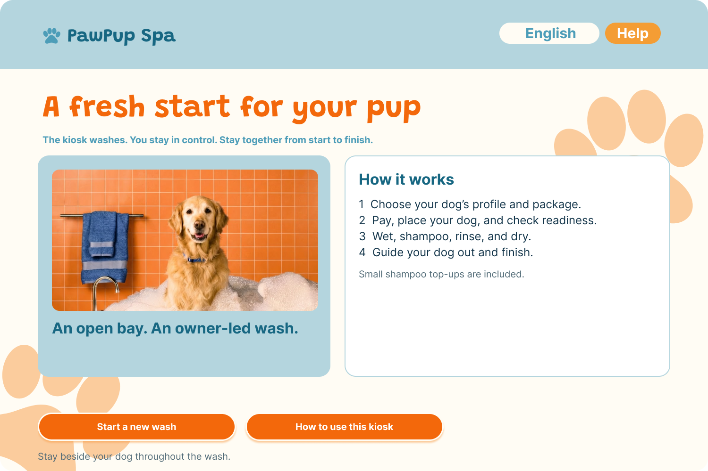
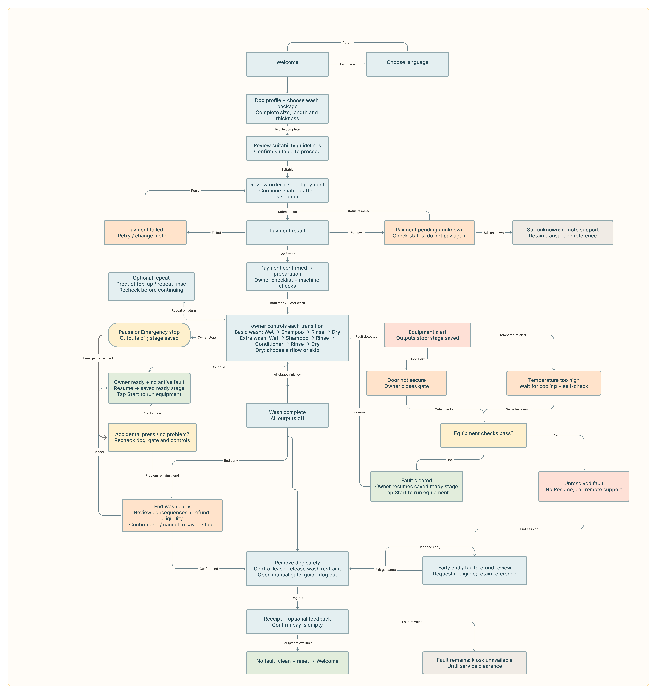
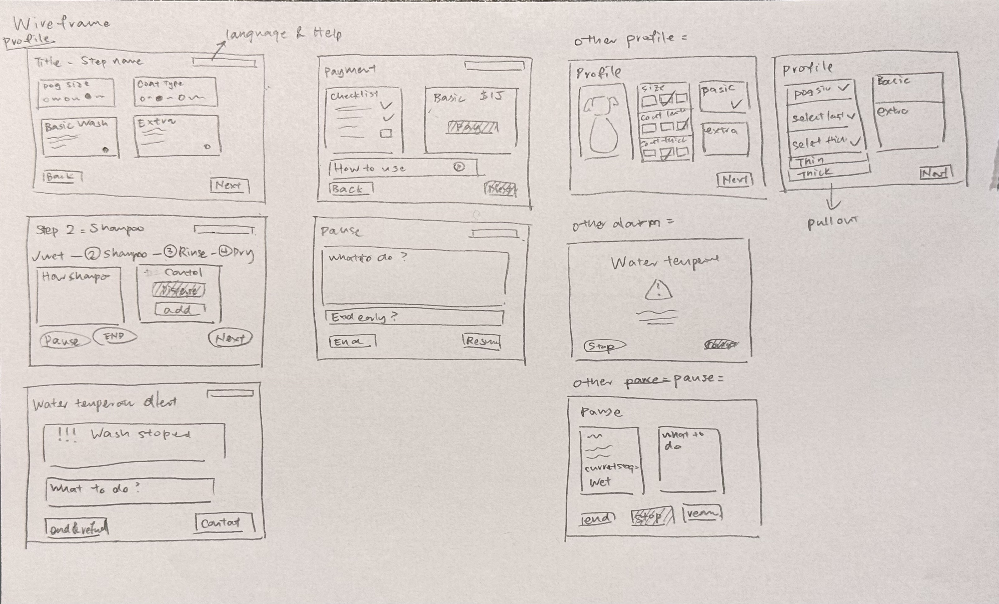
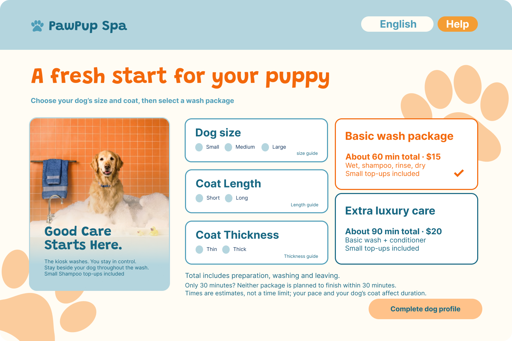
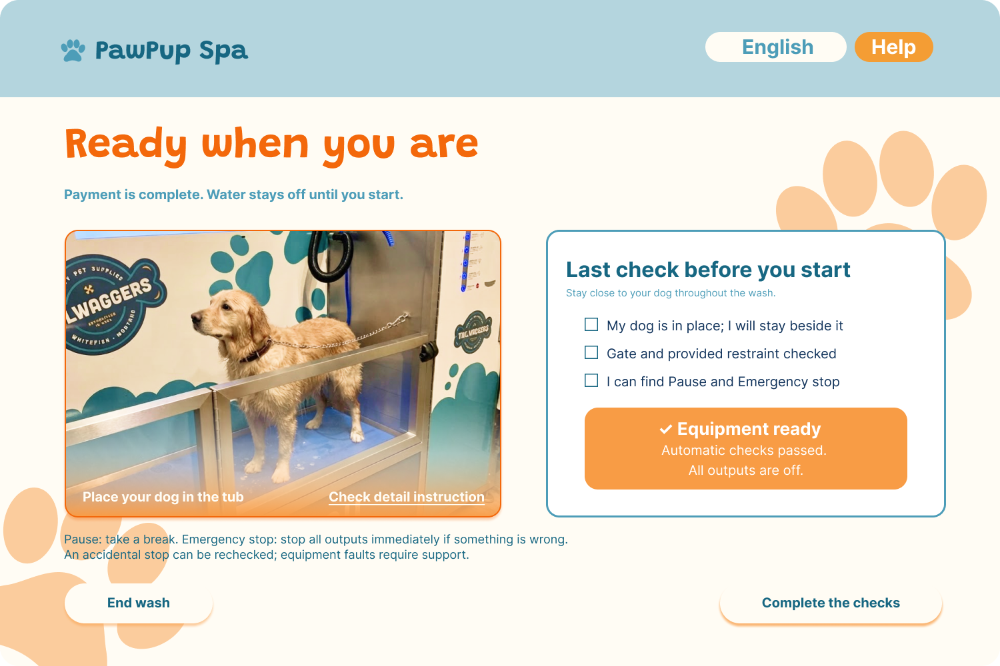
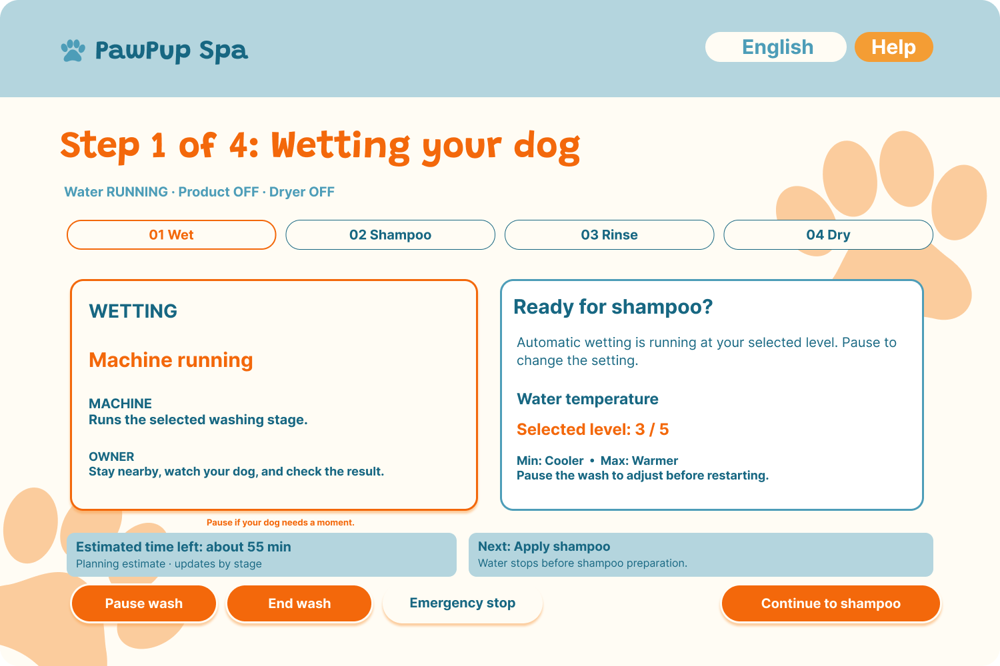
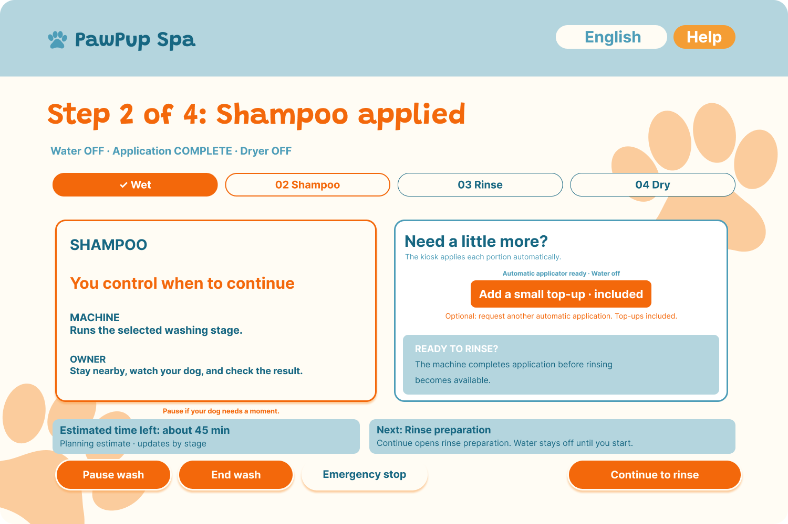
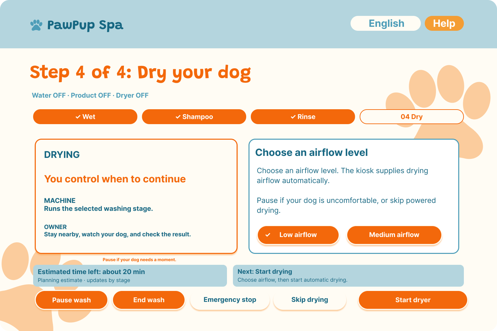
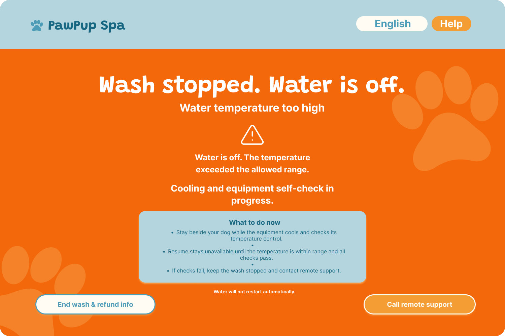
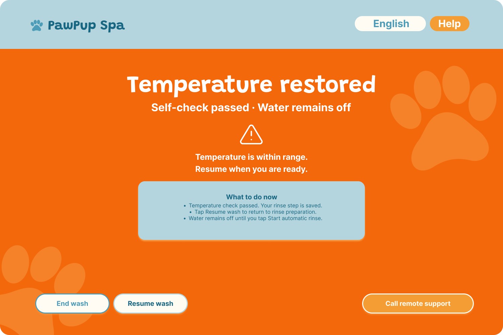

Automated dog-wash kiosk · Individual academic project · 2026
PawPup Spa Kiosk
A touchscreen kiosk concept that guides dog owners from package selection to wash completion, keeping machine status visible and every stage under owner control.
Overview
PawPup Spa is a touchscreen kiosk concept for an automated dog-washing service. The machine performs the wash while the owner stays with their dog and decides when to continue. I explored how a friendly interface could explain an unfamiliar service, make equipment behavior predictable, and support decisions throughout the session.
From flow to prototype
I mapped the complete journey and exception paths, developed hand-drawn wireframes, and translated them into a consistent visual interface and prototype. The flow separates package selection, payment, owner preparation, machine checks, washing, and exit so that completing one step does not unexpectedly trigger the next.
Clear choices before the wash
Dog-profile inputs and package cards show the options, prices, estimated durations, and included stages before payment. Required fields and visible checkmarks help owners understand what is selected. A payment review and a separate readiness checklist make the transition from purchase to equipment use explicit.
Guidance without taking control away
During washing, stage indicators, output-status messages, and nearby instructions explain what the machine is doing and what the owner can do next. Owners can add product, repeat rinsing, select an airflow level, or skip drying. Estimated time supports planning without acting as a fixed cutoff.
Recovery is part of the experience
Pause preserves the current stage, while Emergency stop is designed to stop equipment outputs. Temperature and gate alerts explain the issue, the stopped outputs, and the required next action. Resuming requires checks and an explicit owner action. The proposed flow also includes remote support, an early exit, dog-removal guidance, and applicable refund information.
Visual direction & next steps
Cream backgrounds, a blue-green palette, orange accents, and playful headings create an approachable identity. Consistent layouts, labels, icons, and checkmarks reinforce meaning beyond color. This individual ENP 166 project includes a user-flow map, wireframes, interface screens, a prototype demonstration, and design rationale. It is a design concept rather than a deployed machine; further usability testing should examine readability, touch targets, and understanding of controls and recovery.
Interactive prototype
Explore the interactive prototype in Figma. Open the prototype below to explore the kiosk flow. Open interactive prototype ↗









